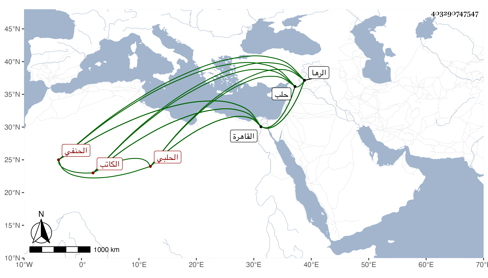

0902Sakhawi.DawLamic.ITO20230111-ara1.EIS1600.403290747547
Biography ID: 403290747547
213
عبد الرحمن بن حسن بن حمزة بن يوسف المحب أبو الفضل الحلبي الحنفي الكاتب نزيل القاهرة ويسمى أيضا محمدا لكنه بهذا أشهر ليتميز عن أخ له اسمه محمد ويعرف بابن الأمين وربما قيل له بالقاهرة كلب العجم . اشتغل بالقاهرة وغيرها في فنون وأخذ عن العز عبد السلام البغدادي وجماعة وسمع معنا على بعض المسندين وتميز في الأدب والتحلية ونحو ذلك وفاق في الكتابة مع حفظ لكثير من أشعار المتقدمين وإلمام بهم في الجملة ومعرفة باللغات الثلاث العربية والعجمية والتركية بحيث ينظم فيها وربما لمع في القصيدة الواحدة ولكنه سلك طرق الخلاعة والمجون والتهتك واشتهر بها وبالتزيد في كلامه بل كان مرتقيا عن هذا الحد ، وتقرب من الدوادار الكبير يشبك من مهدي قربا زائدا واغتبط بكتابته واستعمله في أشياء محسنا إليه مرتبا له راتبا في كل شهر ، وسافر معه إلى حلب وغيرها غير مرة وجرح في واقعة الرها ومع إحسانه لم ينضبط له ولذا لما طال عليه اهماله ضربه وأودعه سجن أولى الجرائم والتزم أن لا يخرجه الا بعد فراغ ما كان حينئذ يكتبه له فبادر للاكمال حينئذ بل أكرهه على التزويج واستمر على طريقته إلى أن تعلل وهو بخلوته في الصرغتمشية أياما ثم حول منها إلى البيمارستان المنصوري فمات عند وصوله إليه وذلك في يوم الخميس مستهل ذي القعدة سنة سبع وثمانين وقد جاز الخمسين سامحه الله وعفا عنه وقد تردد إلي كثيرا وكتبت عنه من نظمه :
| لقدري في بنى زمني انحطاط | وللجهال فيهم إرتفاع |
| لقد أنشدت فيهم وصف حالي | أضاعوني وأي فتى أضاعوا |
وقوله :
| إن فقت في الخط ياقوتا فلا عجب | هذا وفي الشعر قد أصبحت كالطائي |
| وإنما أنا محتاج لواحدة | لنقل نقطة حرف الخاء للطاء |
وقوله :
| حويت المعاصي جلها وحقيرها | بها فقت من بعدي ومن كان من قبلي |
| فيشهد لي ابليس أني شيخه | وما أرتضي شيخا على مثله مثلي |
وعندي من مجونه وغيره غير هذا .
